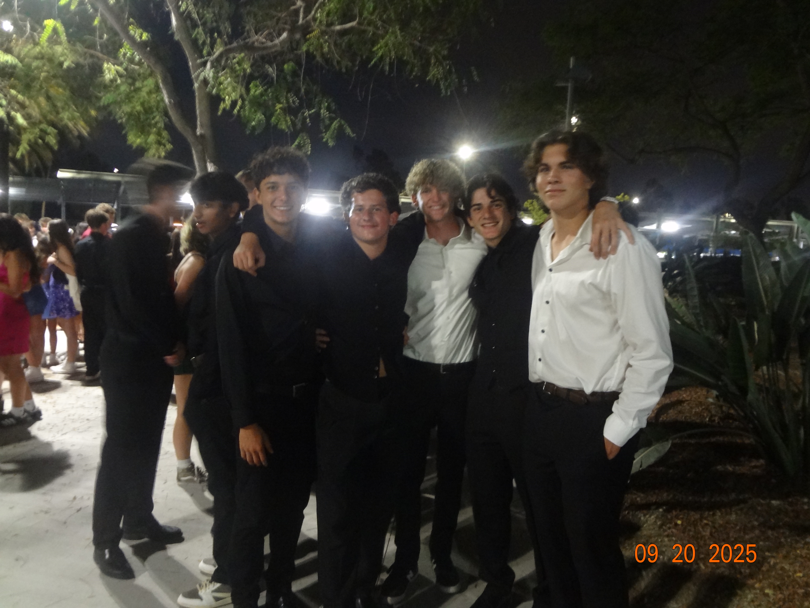
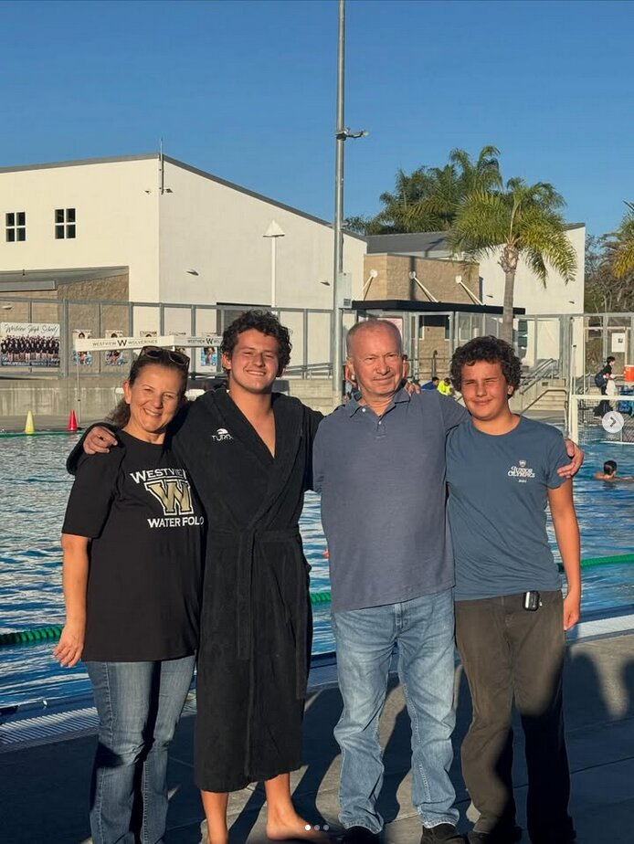
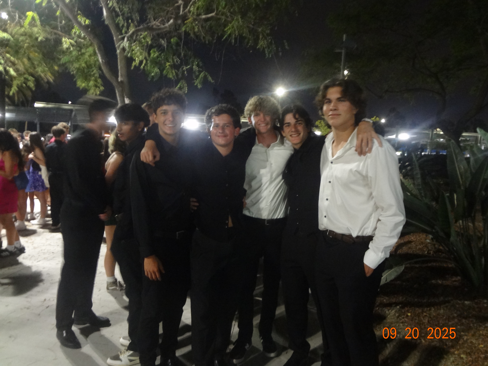
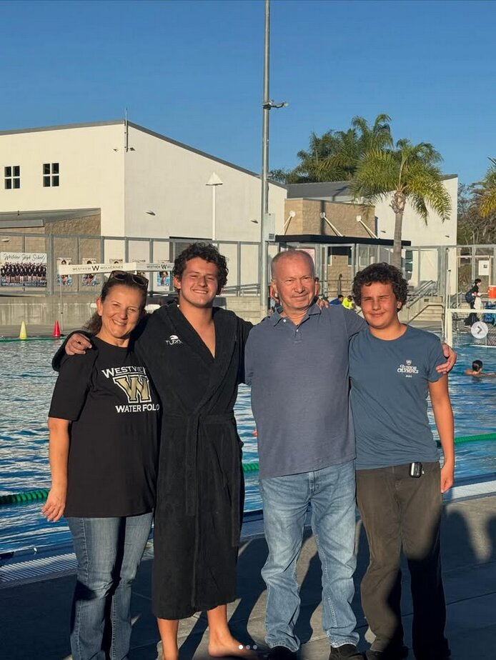

Adam Cengeloglu
About Me
Adam Cengeloglu
 



Who I Am
I’m a Computer Engineering-focused student who likes building things that actually work in the real world. I’m into software, problem-solving, and systems that feel clean, fast, and useful. Outside of school, I’m big on leadership, athletics, and mentoring — I like responsibility and I like improving every week. I’m driven by purpose, and I’m always working on something.